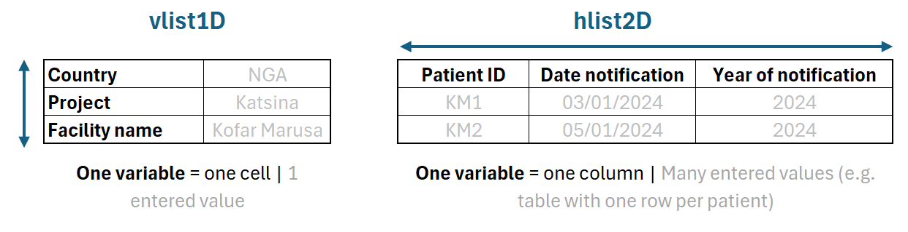
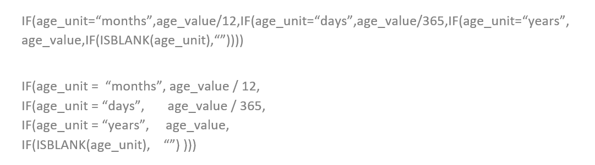
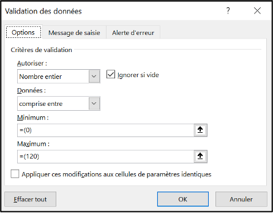
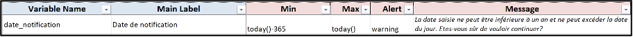

Dictionary sheet
The metadata about linelist variable, which is commonly called the variable dictionary is stored in two of the setup file sheets, the Dictionary sheet and the Choices sheet. Most of the variable attributes/metadata are stored in the Dictionary sheet, while only the categories of categorical variables are stored in the Choices sheet.
Variable metadata on the Dictionary sheet are organised in one (big) table in which one line corresponds to one variable. This table is divided in sections:
| Section | Description |
|---|---|
| Variable names and labels | List the variables to be collected by defining their main characteristics |
| Sheets and Sections | Define sheets and table structure; organise variables in sheets, sections and sub-sections |
| Properties | Define variable specs: visibility, type, format, formulas… |
| Data exports | Selects and order the variables to be exported |
| Data validation | Define accepted MIN and MAX values, and alert or error when an input is outside the rules. |
When compiling the setup, make sure that all the columns from this sheet are unhidden.
Variable names and labels

Variable Name
This is a free text field used to uniquely identify the variables. The name can be used to refer to the variable in formulas or in the Analyses sheet.
After you build the linelist, the variable name can be found in the formula bar of the grey cells from the eight-th row (of the linelist sheet) for 2-dimensions tables like patient data), or in the cell name zone for cells of a 1-dimension table (like the Info sheet).
The variable name is what allows the scripts to uniquely identify variable, in any language the linelist is built in. By opposition, variable labels can change or be translated.
Variable names are used to migrate data from one linelist file to the other: changing the variable name of a variable in the setup is equivalent to creating a new variable: the migration script will not be able to match the variables.
Variable names rules:
- Names must be unique in the setup file, even if the variables are on different sheets.
- Names must be at least 4 characters long to be valid.
- Names should not contain special characters (except for “_”).
- Names will be automatically converted to lower-case during compilation.
As a general advice, try to create short but explicit names (easier said than done).
To ensure that variable names are unique, you can add the name of the sheet in which the variable will appear as a prefix, or use numbers.
If by error two or more variables have the same name, the second occurrence will automatically be suffixed with the value “1”; if there is a third, it will be suffixed with the value “2”, and so on.
We recommend that you do not leave any blanks in the variable name. Instead, replace them with “_”.
Main Label
This is a free text field that defines the variables labels, which are quick descriptions of the variables, which the linelist user can read. They are typically more descriptive and longer than names, but we recommend to keep them moderately short for legibility reasons.
In the linelist, the main label appears in black and bold. It cannot be modified by the end user (with the exception of explicitly editable labels.
Dev Comment
This free text column is for the sole benefit of the setup file developer (in all probability, you), to add technical or practical information. It is not read by the designer and does not affect the generated file.
One of the author of this doc uses these tags:
Format: calculated columns created for applying conditional formatting. These columns are very specific, and pure format. Tagging them helps to quickly make sure that they are never exported
MoH: columns created when a general setup is adapted to a specific MoH format by adding a dedicated export for that format. Usually, we need to create some calculated columns that match the MoH export (recoding levels, or perhaps merging information of several variables…). I like to keep track of which columns are from the general setup and which are specific adaptations.
WHO/Epinetwork: sometimes I want to keep the information that a column is here because it comes from the Epinetwork or the WHO CRF, and should probably not be modified.
Boilerplate: calculated columns that are needed for graphs, or because the information is important (such as epiweeks). These columns are often hidden, but not necessarily, and they sometimes can be exported too.
Feel free to use this column in a ways that helps you work, or to ignore it!
Editable Label
This is a yes/no column. If the value is “yes”, the label of the variable in the linelist can be modified by its user. If the value is “no” or if the field remains empty, the variable label in the linelist is protected.
It is often desirable to add a couple of columns with editable labels at the end of the linelist, in case the user want to collect some extra information. It gives some freedom to users to collect some site specific data without needing an update of the setup. When I do that, I usually provide a couple of free text variables, and a couple of customisable dropdowns variables
Sub Label
This is a free text field used to add a brief description under the variable label, such as the format in which a date is expected, a unit, or any other information to help with filling the variable in.
In the linelist, the sub-label appears just below the main label, in blue and slightly smaller font. It cannot be modified by the end user.
The sub-labels “Calculated” and “Custom dropdown” are added automatically, no need to add them manually.
- Yes / No
- Yes / No / Unk.
- Free text
- The format of your date (ex: DD/MM/YYYY)
Note
This is a free text field which content is added to the linelist as a comment on the corresponding cell. The comment in the linelist can be read by hovering the cursor over the cell. It cannot be modified by the end user.
Example
Definitions in the setup file:
Display in the linelist file:
Sheets and sections
This part of the table organises variables within sheets and tables, and thus defines the structure of the linelist (at least for data-entry sheets).
One data entry sheet can contain only one table but the structure of the table (i.e. the organisation of the variables) can vary.
Sheet Name
This is a free text field that contains the name of the sheet in which the variable will appear.
In general, your linelists will contain at least a patient data sheet, and an info/metadata sheet.
The created linelist will contain more sheets than the one you specify in this section, as some of the sheets are added automatically during compilation (an instruction sheet, a sheet for the geobase, etc.) and more sheets can be added if you choose to include analyses.
Sheet Type
This is a dropdown menu field used to define the type of table contained in the sheet. There are two options:
vlist1D: corresponds to a table built Vertically, so the variables labels are in the same column, and only one entry is expected for each variable. This structure of data is well adapted to collect metadata about the health structure, the project or the data collection itself.
hlist2D: corresponds to a table built Horizontally, so the variables labels appear in the same row, and several entries are possible for each variable. This type of sheet is used to collect patient data.

Main Section
This is a free text field used to define the name of the main section in which the variable is located. This makes it possible to group variables by theme to make data entry and navigation easier.
In the linelist file, the main sections appear in a darker colour in rows or columns, depending on the type of table (dark blue in the example). They cannot be modified by the end user.
To make the dictionary easier to read, we recommend that you group (write one below another) the variables of a same sheet and a same section.
Sub Section
This is a free text field that allows you to further refine the organisation of variables in the table by creating a second level of grouping.
In the linelist file, the sub-sections appear in a lighter colour in the row or column, depending on the type of table (light blue in the example). They cannot be modified by the end user.
Example
vlist1D
Definition in the setup file:
Display in the linelist file:

hlist2D
Definition in the setup file:

Display in the linelist file:
Properties
The properties section of the table controls variable visibility, uniqueness, and the type and format of the variable (what it contains, in which form, and in which display).
Status
This is a dropdown field that contains four options for defining the visibility of the variable. The linelist has a functionality to show or hide optional variables depending on the data needs on the field.
mandatory: variable displayed by default, it cannot be hidden in the linelist
optional, visible: variable displayed by default, it can be displayed or hidden by the linelist user
optional, hidden: variable hidden by default, it can be displayed or hidden by the linelist user
hidden: variable hidden by default, it cannot be displayed in the linelist
Variables can be shown or hidden using the “Show/Hide” button of the linelist OutbreakTools menu in the linelist file. See the how to.
Technically, the linelist user can forcefully hide/un-hide columns.
Un-hiding hidden (usually calculated) columns is usually desirable during linelist debug or to go check data that may interest you (e.g. a hidden calculated epiweek of exit). You can hide them after consultation without consequences on the rest of the linelist.
It is however more dangerous to forcefully hide “mandatory” columns. These columns are often fundamental variables in the linelist, that are needed for data understanding and analyses (e.g. date of admission, age or sex). If you choose to hide one of these columns, know that some analyses might not function as expected, or not at all because they rely on the hidden columns.
Finally, any change of column visibility that is not made via the “Hide/show variable” button of the linelist will not be recorded and migrated to a new linelist.
Example
Definition in the setup file:
Display in the linelist file:

Register Book
This is a yes/no dropdown menu field used to predefine the variables to be included in the register to be printed. This step is not mandatory and can be managed later, directly in the linelist file.
Personal Identifier
This is a yes/no dropdown menu field that indicates that the variable contains personal data (such as names, phone numbers etc.).
This column has two uses:
it allows the setup developer to quickly identify variables containing personal data in its dictionary
it is used to remove variables automatically from the exports if such a behaviour is needed (see the Exports sheet).
Thinking about variables
There are many ways of thinking about variables and of classifying them.
In general we can distinguished between input variables, where the user enters raw data, and calculated (or derived) variables which require no input. Both of them can be created in OutbreakTools.
Independently of this distinction, a variety of variables types can exist, containing numbers or text in various forms. In Excel, we will often use the types integer, decimals, dates and text.1. These types are implemented in OutbreakTools linelists.
For input variables, you could think of two ways of entering data: a free text approach, where user can enter the value of their choice, and a controlled (constrained) approach, where the values the user can enter are limited. In Excel, this is generally implemented through dropdown menus from which the data encoder selects a value. In OutbreakTools, there have several ways of building dropdown menus, depending on whether you know the categories in advance or not. This is what we call variable control.
Finally, many softwares allow the user to set the way the data is displayed, which we here call variable format. For example:
- The date first of January of 2023 can be displayed as “01/01/2024”, or “1/1/24” or 1-Jan-24” etc.
- The number “1” could be displayed as “1” simply, or “001”
- The number 0.01 could be displayed with different levels of rounding, or even as “10%” if the column contains proportions that can be displayed as percentages.
Variable Type
This column proposes a dropdown menu field containing four options for defining the type2 of each variable:
Text: creates a column of text3. The entry of the text may be free or constrained by a dropdown menu.
Date: creates a date column, whose exact format is defined in the Variable format column. The default format is jj-mmm-aaaa.
Integer: creates an integer column
Decimal: creates a column with decimal numbers. The number of digits after the decimal point is defined in the Variable format.

Variable Format
This field is used to specify the format of the variable (which depends on its type).
There is a predefined dropdown list with common options, but you can enter any format by hand, as long as it is written in Excel syntax (see here and here for information).

Example: for an integer to appear with at least 2 characters, enter the format: # #00
Note that the default date format is jj-mmm-aaaa.
Control
This is a dropdown field containing nine options for defining variables that are not free text:
- choice_manual
- choice_custom
- choice_multiple
- list_auto
- geo
- hf
- formula
- case_when
- choice_formula
These options broadly correspond to two sorts of variables to be created:
- input categorical variables with constrained values and filled via a dropdown menu
- calculated variables
In OutbreakTools, the variables to fill in geographic information are treated as a special case of categorical variable and have their own dedicated control.
| Sort of variable | Controls | Data entry in the linelist |
|---|---|---|
| Categorical | choice_manual, choice_custom, choice_multiple, list_auto | Dropdown menu |
| Geo-related columns (a special case of categorical) | geo, hf | GeoHelper or dropdown menu |
| Calculated | formula, choice_formula, case_when | No user input needed in these columns |
For non-text variable (integers, decimals, dates) is is possible to restrict values using data validation
Special case of administrative levels and health facilities
Two controls allow the user of the linelist to enter geographic information, or information about health facilities. While the created variables are technically dropdown menus, they are treated as a special type of variables in OubtbreakTools linelists, with dedicated tools and analyses.
OutbreakTool linelists all have a button to import a geobase, a standardised file containing lists of administrative levels to describe places. Once the geobase is successfully imported, the values from its lists populate specific dropdown menus.
geo
The “geo” control indicates that geographic data is expected. In the linelist, this results in the creation of four columns, one for each administrative level, which will be populated by values imported from a geobase. The user can enter data by using the GeoHelper button in the linelist or by selecting values from the cascading dropdown menus in the linelist.
The “geo” control does not need additional information to be filled in the “Control Details” column.
In the linelist, the variable labels appear in orange cells, which means that the “GeoHelper” button can be used to fill in the corresponding cells.
Example:
Definition in the setup file:
Display in the linelist file:
Display in the linelist file after importing a geobase (here a Nigeria geobase, note the personalisation of the labels):

hf
The “hf” control means that the user will enter health facility names. By identifying hf data in this way, you can use the GeoHelper button in the linelist to fill in the column.
Similarly to the “geo” control, the “hf” control does not need additional information to be filled in the “Control Details” column.
The variable label appears in an orange cell, which means that the GeoHelper button can be used to fill in the corresponding cells.
Example:
Definition in the setup file:

Display in the linelist:
Calculated variables
Three controls allow the creation of calculated columns. In general, the user can define a column by providing an Excel formula 4, but the setup file also provides two custom functions, CASE_WHEN and CHOICE_FORMULA to simplify formula syntax.
| Control | Functions | Use | Default value | Can be used in used in analyses tables |
|---|---|---|---|---|
| formula | Any combination of Excel functions (in English) | Anything | Continuous variables: yes Categorical variables: no | |
| case_when | CASE_WHEN(Excel functions optional) |
Replaces nested Ifs | Empty cells; user can modify it | No |
| choice_formula | CHOICE_FORMULA (Excel functions optional) |
Replaces nested IF |
Empty character; user cannot modify it | Yes |
formula
When using the “formula” control, the value displayed is calculated according to a formula defined in the Control details column of the dictionary.
case_when
Variables of control “case_when” use a specifically developed function, CASE_WHEN, which replaces a succession of nested IF. While you could write the formula with nested IF, CASE_WHEN is easier to read, thus simpler to use.
Usercase You want to recode a variable, but you do not know which values will be generated. For example, the raw data contains a columns for the age value and a column for the age unit. You use CASE_WHEN to create a column “age_years”. The values which will be present in the column can take many decimal value in the range of reasonable ages.
Categorical variable created with this control cannot be used in univariate or bivariate tables in analyses sheets, because the designer cannot know in advance how many modalities the variable will take, and thus cannot build the tables.
On the other hand, numeric variables created with this control (such as age in years) can be summarised in the analyses. Indeed, taking the mean or the median of a numeric variable variable outputs one value, so the designer knows what to expect.
To work properly the “case_when” control must be associated with a CASE_WHENfunction in the Control details column, or the designer will not work properly because the function is not native.
If you are using a recent version of Excel, you may know the functions IFS or SWITCH. OutbreakTools does not rely on them as they are not retro-compatible with some older versions of Excel. Use a CASE_WHEN or CHOICE_FORMULA instead.
Read more about writing the formula in the Control details column below.
choice_formula
This control indicates the use of the CHOICE_FORMULA function, another custom function. This function is a special case of the CASE_WHEN formula, with more constrains on it. Indeed, the values that the calculated variable can take are known in advance and predefined in the Choices sheet.
Columns generated with this control can be used in univariate or bivariate tables, as the number of possible categories is known in advance.
Read more about writing the formula in the Control details column below.
Control details
This is a free text field, which accepts three types of values:
- the name of a list (defined in the Choices sheet),
- the name of a variable (defined in the Dictionary sheet)
- a formula.
| Control type | Control column | Value expected in the “Control details” column | |
|---|---|---|---|
| Static dropdown menu | choice_manual choice_custom choice_multiple | The name of a list that contains the authorised values defined in the Choice sheet (“List Name” column) | |
| Dynamic dropdown | list_auto | The name of an existing variable | |
| Calculated | formula case_when choice_formula | An Excel formula (that can contain one or | more functions, including the custom | functions CASE_WHEN and CHOICE_FORMULA) |
|
Defining dropdown menu categories
When the controls “choice_manual”, “choice_multiple” (and optionally “choice_custom”) are selected in the Control column, you need to define the values the dropdown menu will contain (i.e. the categories).
These values are specified in the Choices sheet. Categories of a same variable are bundled into named lists. The name of the list is then entered in the “Control details” column of the Dictionary sheet.

In the case of “list_auto” variables, you only need to provide the name of another variable in the “Control details” column. In the linelist, the values present in the referred variable will be automatically used to populate the dropdown menu. See this How to for an example.
Formulas
If you have selected “formula”, “choice_formula” or “case_when” in the Control column, you need to provide the formula to be applied in this column.
The information given in the Formula control section below are also valid for “choice_formula” and “case_when” controls as these, while based on custom functions, are still formulas.
formula control
The formula is written in English, without an “=” sign. During compilation, the formulas will automatically be translated into the Excel language defined on the computer used to generate the linelist.
When writing a formula, make sure that it returns an empty value for rows without an ID, as all the rows with non-null values in it will be counted in the Analyses sheets. If your graphs show a lot of “Missing” values that do not reflect how well a column is filled, check that a calculated column is not responsible for it.
If your Excel is not configured to use English, pay special attention to the following:
Use the English function names, such as
MEANinstead ofMOYENNE, orIFinstead ofSI.Function arguments are separated by “,” in English. Beware of lingering “;” if you are used to Excel in French!
Similarly, English Excel uses “.” for decimals, not “,” like in French.
In Excel, you can use ALT+ENTRY to insert a carriage return to go to the next line. This does not affect the execution of your formulas, but greatly increases the readability. The same goes for inserting spaces around operators. Contrast these two formulas:

case_when control
Use the CASE_WHEN function to replace nested IF (therefore limiting the risk of error when writing the formula), in this form:
CASE_WHEN(condition1, value1,
condition2, value2,
condition3, value3,
…, …,
DEFAULT_VALUE)
You need at least one pair of conditions-values but the function shines when there are many pairs. As in the nested IF or in the IFS functions, the conditional statement are tested in the order they are written.
By default, any case that is not covered by the previous conditions will return an empty cell, unless you provide a default value (the “else”).
Example
You could write a formula with nested IF to calculate an age_years column:
IF(age_unit = “months”, age_value / 12, IF(age_unit = “days”, age_value / 365, IF(age_unit = “years”, age_value, IF(ISBLANK(age_unit), ““))))
Or write the equivalent with CASE_WHEN:
CASE_WHEN(age_unit = “months”,
age_value / 12, age_unit = “days”,
age_value / 365, age_unit = “years”,
age_value)
The information about the more generalist “formula” control are also valid here.
choice_formula control
The CHOICE_FORMULA function is a subcase of CASE_WHEN for when we want to encode a few known modalities.
The pseudo-code is very similar to the CASE_WHEN function:
CHOICE_FORMULA(list_values_choices,
condition1, value1,
condition2, value2,
condition3, value3,
…, … )
But here, the value1, value2, value3 etc. are pre-defined in the list “list_values_choices” in the “Choices” sheet, as if these values were for a dropdown menu 5.
Since we know exactly which modalities this variable can take, we can use it as a categorical variable in the Analyses sheet, to build a uni or a bivariate table.
Example:
CHOICE_FORMULA(list_age_group, age_years < 5, “0 – 4 years”, age_years < 10, “5 – 9 years, age_years < 15,”10 – 14 years, age_years < 20, “15 – 19 years, AND(age_years >= 20, age_years < 120),”20+ years” )
Here, “list_age_group” corresponds to the list where the potential values to be returned are predefined; “age_years” is an existing variable that contains the age in years. The values between inverted commas (“0 – 5 years”) correspond to the possible results, predefined in “list_age_group”.
The information about the more generalist “formula” control are also valid here.
Example
Here is an example of a setup that codes for two input columns (age value and age unit) and three calculated columns.
age_numis a numeric column, with no special controlage_unitcontains a dropdown with categories “Day”/“Month/”Year”age_yearsusesCASE_WHENto transform the input data into the age in years and keeping the formula easy to read. This column is continous, and can be used in the analyses to calculate ameanor amedian(or any relevant summary statistics)age_monthsis a simpler formula based onage_years.age_groupusesCHOICE_FORMULAso this column can be used in univariate or bivariate tables to count the nomber of patients in each class, and to build an age pyramid.
Unique
This is a yes/no dropdown menu field. If the variable should have unique values (such as the patient ID in some cases), special data validation will be applied to duplicated values.
Data exports
OutbreakTools linelist have extensive data export functionalities. It is possible to define several personalised exports from the setup.
To define a specific export, you need to fill both the “Export” section in the Dictionary sheet and the Exports sheet. The Export sheet contains metadata for each export, while the “Export” columns in the Dictionary sheet allows to decide individually for each variable whether to export it or not in a given export.
To create a new export, first fill the Exports sheet, which will add corresponding columns to the Dictionary sheet.
Rules
Variables with any value entered in the “Export” columns will be exported. If you want to not export a variable, you need to keep the cells empty.
You can define the order in which variables are displayed in exports by entering numbers in the export column. If two variables have the same number (in the same export column), they will be exported in the order they are defined in the setup (from top to bottom).
If you wish to create an anonymous export, i.e. one containing no personal identifier, you can filter the “personal identifier” column to yes and check that the column corresponding to the anonymous export is empty.
Example
In the following example, two exports have been created. The first one exports all variables present in the order that they appear in the setup. The other export (perhaps a specific MoH export) only export some variable, and choses the order (facility_name is exported first, then facility_type, then etc.).
Data validation
To improve the quality of the data entered, it is possible to alert or block the user if they attempt to enter invalid data.
For continuous variables, you can to specify the min and or max values (see below). For categorical variables with dropdown menus, go directly to the Alert column.
Min
This is a free text field that defines the minimal authorised value in the variable. It can be an integer, a decimal number, the name of a variable or a formula.
As with formulas, do not start with an “=” sign!
Examples:
- “0” to forbid negative values in an age in month or year column
date_notificationto not allow the date of exit to be before the arrival in the health facilitytoday() - 2 * 365to avoid dates older than two years if you know that the linelist is not used to enter retrospective data
Max
This is a free text field used to define the upper limit of authorised values. It can be an integer, a decimal number, a variable name or a formula.
As with the formulas, the “=” sign is not placed in front of the limits you define.
Examples:
- “120” to limit the age in year
today()to not allow dates after the day of data entry in the case of most date columns
Alert
This is a dropdown field. There are two possible options:
- error
- warning
❌ The “error” option blocks data entry: it is impossible to force the entry of a value other than the authorised one. It is symbolised by a cross in a red circle 6.
⚠️ “warning” warns the end user that the data entered is not within the expected values, but if they wish they can still force this data in. It is symbolised by an exclamation mark in an orange triangle.
You can add error and warnings to columns with dropdown menus, the messages will appear if the user tries to enter a value not from the dropdown menu.
Message
This is a free text field used to give the end user an indication of why their entry is invalid.
Examples
A continuous variable: patient’s age
Definition in the setup file:
How it is encoded in the data validation system of the linelist file:

A warning box appearing when the user attempts to enter invalid data:

A categorical variable: age unit
Definition in the setup file:
Display in the linelist:

A date variable
Definition in the setup file:

How it is encoded in the data validation system of the linelist file:

Warning box appearing when the user attempts to enter invalid data:

Conditional Formatting

This section is used to define conditional formatting rules.
Formatting condition
The “Formatting Condition” column is a free text column where one must provide the name of a variable to use as a reference. Rows for which the reference column contains 1 will be formatted with the formatting defined in the “Formatting Values” column. Row containing 0 will have no special formatting.
This means that in most cases, you will need to calculate a dummy variable, with a result of 1 or 0, to guide the formatting.
you can give special names to these calculated columns to easily identify them (e.g. format_xxx).
Formatting values
This is a free text column, but what matters is not the text entered in it but the formatting applied to it, which is read and applied to the cells in the linelist file if the formatting condition is met.
Lock cells
The Lock Cells section is not currently available.
Footnotes
Note that we used the word “type” in its computer science meaning, which differs a bit from the statistics one.↩︎
sometimes called class in some software↩︎
also called character string in some softwares↩︎
i.e. a combination of Excel functions↩︎
you can of course give the list any name that you wish, such as “list_age_group” for example if you were recoding age↩︎
Sometimes the user manage to break through by pasting values though↩︎